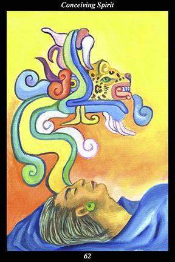

 | IMAGEA male warrior receives a vision of a great feathered serpent whose inner nature is a roaring jaguar. |
INTERPRETATION
The male warrior symbolizes the versatility and fortitude of the disciplined spirit. That he receives a vision means that your ability to sense the invisible grows stronger. The feathered serpent symbolizes the divine twin, the higher self, the light of wisdom and understanding. That the feathered serpent’s inner nature is a roaring jaguar means that within even the most subtle and profound understanding, an even more subtle and profound mystery demands to be heard. Taken together, these symbols mean that you grow stronger and more resourceful by attuning your senses to the world of spirit right before your eyes.
ACTION
The masculine half of the spirit warrior breaks through the barrier separating matter and spirit. Such a barrier is erected in our minds by the constant training we receive from those who find advantage in promoting the separation of people from nature, from each other, and from their own true self. If people everywhere perceived matter and spirit to be the same thing, after all, the ignorance, cruelty, and suffering that makes up much of human history would end: if we were all to experience the material form of nature as spirit, we would stop harming it by diminishing it faster than we help it replenish itself; if we were all to experience the material form of people everywhere as spirit, we would stop harming one another by acting as if our own rights and desires were superior to their own; if we were all to experience the material form of our own individual bodies as spirit, we would stop harming ourselves by doubting that every thought, feeling, and action play a pivotal role in eternity. Breaking through such a mental barrier is a matter of constant training, as well: if we do not use every thought, feeling, and action to intensify our experience of matter as spirit, we continue to desecrate the temple of nature, the temple of civilization, and the temple of individuality. Because you increasingly see the invisible within the visible, your thoughts are filled with insight, your feelings with good will, and your actions with
benefit.
INTENT: When the warrior’s spirit has become second nature, we inevitably come to see through the foremost artifice of the enemy-within. A rigorous cultivation of the warrior’s spirit is, in effect, a prolonged act of laying siege to the stronghold of the enemy-within: true victory is achieved only when the walls have been broken and the hostage set free. In this sense, the hostage is our innate awareness of the oneness of all things, the walls of the stronghold are the views of separateness we have been trained to accept as real, and the enemy-within is the traitor who takes hostage the true heir and usurps the throne of experience. By reminding ourselves constantly that the present boundaries of our awareness do not mark the furthest limits of awareness, we strip away all the false views that have accrued to the lower self over the course of this lifetime. In this way, we clear our eyes of the cobwebs that have obstructed our seeing the world of spirit right before our eyes.
SUMMARY
A momentous change is at hand. All your life the soul has looked at the world through your eyes but now you are beginning to look at the world through the soul’s eyes. Everything you undertake will
benefit others and make you a treasured part of your relationships. Treat everything with the reverence due an aspect of the divine. Leave behind worry, trust that your path is blessed.
THE LINE CHANGES
1° It is the season to congregate and enjoy being with others by attending public spectacles in the arts, sciences, and athletics. It is the season to congregate in celebration of traditional religious and political holidays. Shared physical experiences fuse people into a cohesive whole.
2° Honoring everyone but your own extended family reveals the blind spot of ingratitude. Honoring no one but your own extended family reveals the blind spot of insecurity. Honoring all as your extended family reveals the clear-slightness of goodwill—be ever more inclusive in your heart.
3° Selfishness is the enemy-within—in the midst of much personal evolution, you are surprised to find a nagging resentment toward the needs of others. This is the aspect of sharing that puts your ideals to the test. If you don’t force things, you will prove to yourself that benefiting others benefits you.
4° There are people who will use your enthusiasm, idealism, and talents to advance their own cause. If you find yourself taking advantage of others’ hopes and fears, then you have been duped into doing your superiors’ dirty work for them. Quit and go forward.
5° The bond between above and below is unbreakable, forged in the fires of many shared trials and tribulations. You can count on this relationship to the end—just as the union of man and woman produces a child, you are producing something that will outlast you. Radiate the peace you feel.
6° In the final analysis, there are things that cannot be shared with others—mysteries, paradoxes, inexpressible longings, impossible visions. Such is the fate of every individual—it is the well, in fact, of what makes us individual. Continue your quest for absolute at-one-ment.